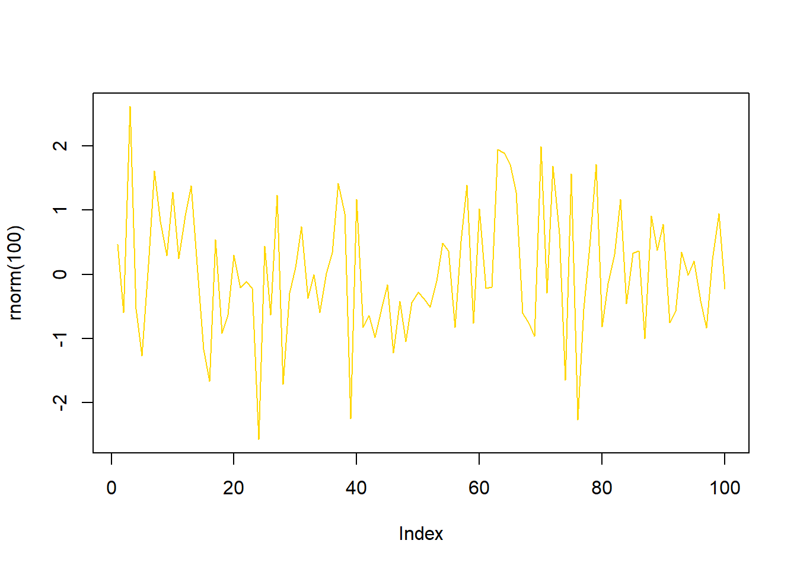
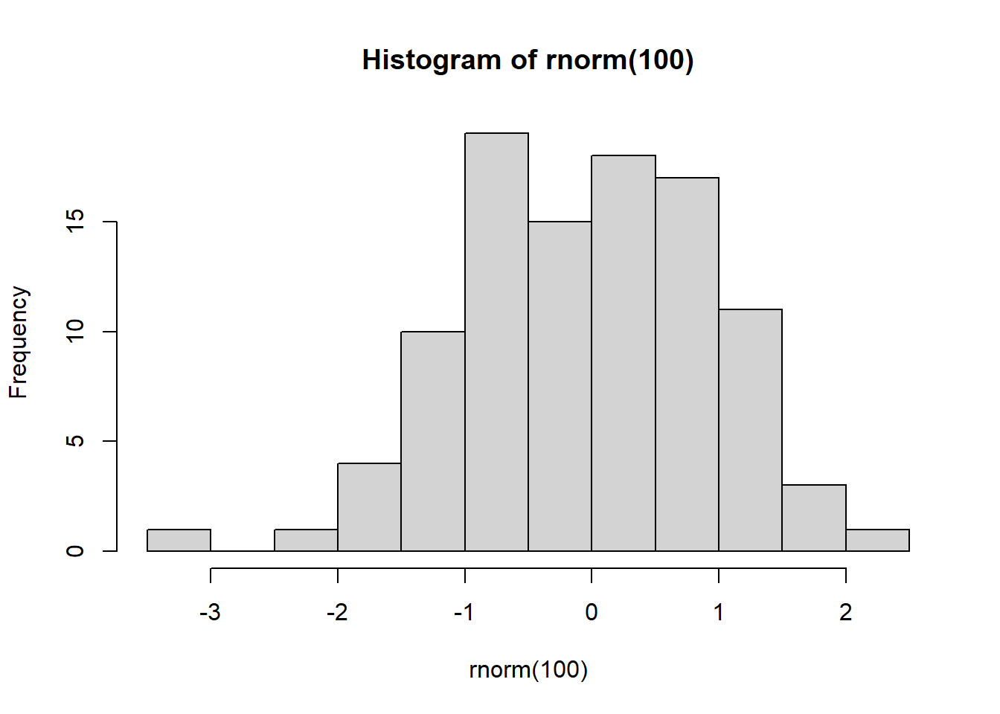
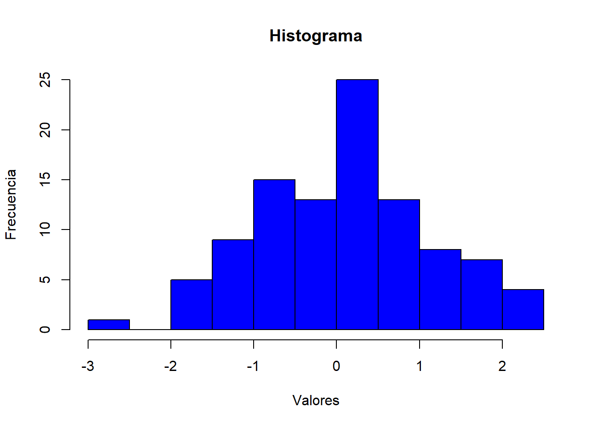

6 Gráficos
Graficar es una actividad estadística importante, por lo que no debería ser una sorpresa que R incluya muchas herramientas para hacerlo. Dentro de los tipos de gráficos que se pueden crear en R se encuentran: de densidad (como histogramas), de barras, de dispersión, de líneas, circulares, boxplots, entre otros.
La siguiente línea muestra un gráfico de línea:

Otro ejemplo es el gráfico de un histograma:

6.1 Opciones para editar los gráficos
Los gráficos que se crean en R se pueden personalizar cambiando fuentes, colores, títulos, entre otros; todo esto se realiza haciendo uso de las opciones de los gráficos.
Dentro de algunos parámetros que se pueden establecer para los gráficos están:
- main: título del gráfico
- xlab: Nombre en el eje x
- ylab: Nombre en el eje y
- cex: Indica la escala para texto y símbolos del gráfico siendo 1 el valor normal
- lty: Establece el tipo de línea a usar en el gráfico; se puede escoger una línea recta ininterrumpida, una línea punteada, etc
- lwd: Grosor de la línea del gráfico. 1 es el valor preestablecido
- pch: Establece el tipo de símbolo para el gráfico. Se usa un número entero que designa a cada tipo. Para ver los tipos de símbolos, buscar por la función points en la ayuda de R
- col: Determina el color de elementos del gráfico. Si se busca en Google “R color chart” se puede encontrar un archivo pdf que contiene una gran cantidad de opciones de colores
Por ejemplo, volviendo sobre el histograma

Se puede usar la función par() desde el inicio del código para fijar todas las opciones desde el inicio y que apliquen a todos los gráficos.
6.2 Algunos tipos de gráficos
6.2.1 Scatterplot
Para crear un scatterplot en R, la función básica es plot(x,y) donde x y y denotan los puntos (x,y) del gráfico. Usando la función abline se puede añadir al scatterplot una línea. También es importante mencionar que la función scatterplot() que hace parte del paquete car contiene muchas más opciones para este tipo de gráficos. Miremos el siguiente ejemplo con los datos wage1.dta del libro de Wooldridge4:
library(haven) # Se carga el paquete para leer archivos .dta
data <- read_dta("http://fmwww.bc.edu/ec-p/data/wooldridge/wage1.dta")
plot(data$educ,data$wage, xlab="Años de educación", ylab="Salario hora", col="blue")
abline(lm(wage ~ educ, data=data), col="red") # Con esta función se traza la línea de regresión6.2.2 Histograma
Se pueden crear usando la función hist(x) donde x son los valores que se quieren graficar. La opción freq=FALSE hace que, en lugar de graficar las frecuencias, se grafiquen las densidades. De igual manera, se puede usar la función breaks para establecer el número de barras. Los siguientes ejemplos ilustran los histogramas:
6.2.3 Diagramas de densidad
Para graficar un diagrama de densidad de Kernel, simplemente se debe usar la función plot(density(x)) siendo x los datos a los que se les estimará la densidad de Kernel.
Superponiendo densidades:
plot(density(data$wage[data$nonwhite==1]), col="red", main="Densidad por raza",
xlab="Salarios hora", ylab="Densidad", lwd=2, lty=1)
lines(density(data$wage[data$nonwhite==0]), col="blue", lwd=2, lty=2)
legend(13, 0.1, legend = c("Afro", "No afro"),col = c("red", "blue"),lty=c(1,2),
lwd=2, cex=.8, bty = "n")
6.2.4 Gráficos de líneas
Con la función plot(x,y, type=“l”) se genera un gráfico de línea entre la variable x y y, y la opción type=“l” señala que el gráfico será de línea. Utilizando la base de datos beveridge.dta del libro de Wooldridge se gráfica la variable tasa de desempleo en el tiempo:
6.2.5 Gráfico de caja o boxplot
El boxplot permite visualizar la distribución completa de una variable. Este gráfico muestra los cuartiles, los valores mínimo y máximo y valores raros o outliers. Volviendo sobre la base wage1.dta se hace el boxplot de la variable wage:
El boxplot puede calcularse por categoría, por ejemplo el boxplot de los salarios hora por nivel educativo:
6.2.6 Gráficos simultáneos
R también permite hacer varios gráficos de diferente tipo simultáneamente:
6.3 Guardando gráficos
Los gráficos se pueden guardar en distintos formatos como pdf, png, jpeg, entre otros. Existen diferentes formas de guardar los gráficos:
- En la ventana del plot existe la opción de Export y la imagen puede guardarse en pdf o como imagen en diferentes formatos
- Otra opción es apartir de los siguientes comandos:
Guardando en formato pdf
pdf(file="docs/data/fig1.pdf")
plot(data$wage, type="l", lwd=3, col=rgb(1,0,0,0.3))
points(data$educ, pch=20, cex=4, col=rgb(0,0,1,0.3))
dev.off()## png
## 2Guardando en formato png
png(file="docs/data/fig1.png", width = 6, height = 3.25, units = "in", res = 1200,
pointsize = 4)
plot(data$wage, type="l", lwd=3, col=rgb(1,0,0,0.3))
points(data$educ, pch=20, cex=4, col=rgb(0,0,1,0.3))
dev.off()## png
## 2Wooldridge, J. (2013). Introducción a la econometría. 5a edición, Cengage Learning.↩
Tarea 9: Utilizando la base de datos wage1.dta del libro de Wooldridge realice un análisis de las diferencias salariales por género. Para ello calcule las principales estadísticas y la densidad de los salarios hora (wage) distinguiendo por género (female). Con el fin de determinar si existe alguna relación entre el diferencial salarial por género y la educación, haga un scatterplot entre salarios y educación distinguiendo por género. También realice un boxplot del salario distinguiendo nivel educativo diferenciando por género. Con los resultados realice un breve análisis que ayude a entender las diferencias salariales entre hombres y mujeres.